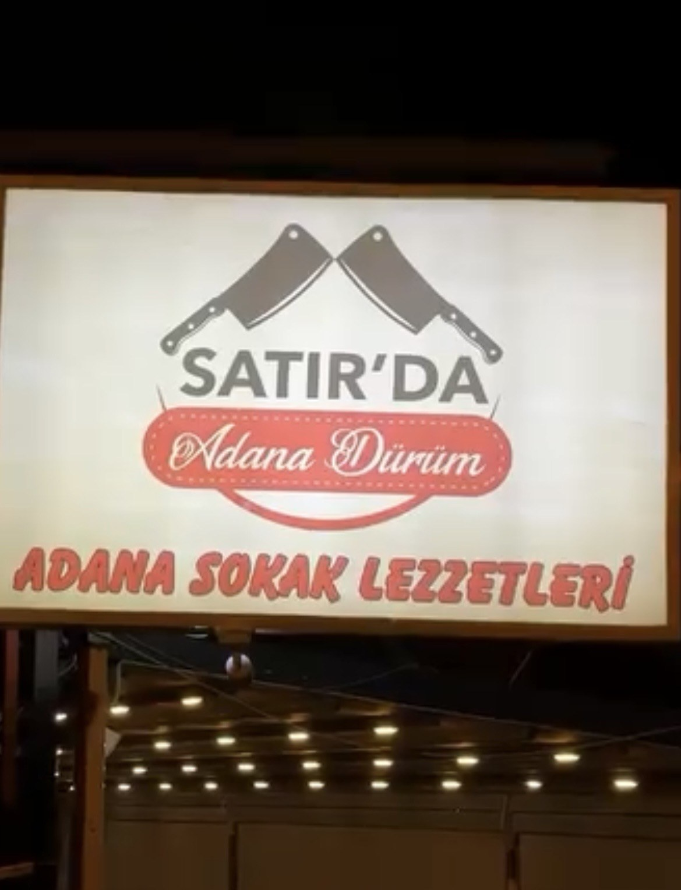
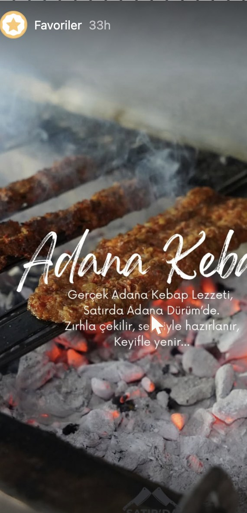
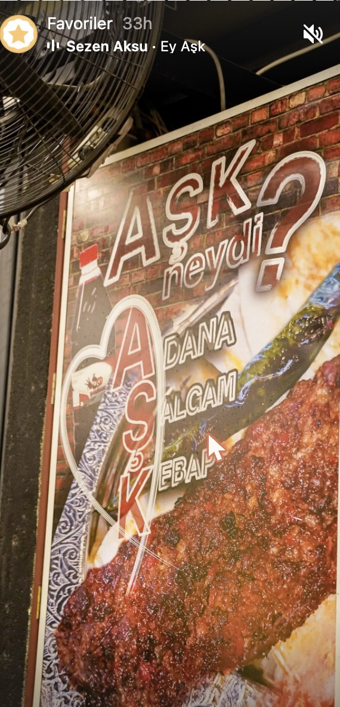
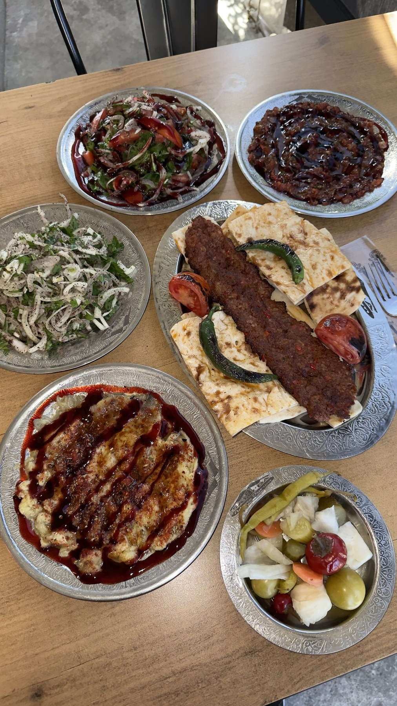

Bitez'in Kalbinde Geleneksel Tat
Adana Ticaret Odası Tescilli Muğla ve Bodrum'daki TEK Tescilli Gerçek Adana Lezzeti
Zırh ile çekilen kuzu satır kıymasıyla, meşe kömürü ateşinde — Bitez'de 1.554 müşterinin tercih ettiği lezzet.
KEŞFET
keyboard_double_arrow_down
Zırh Kıymasının Sanatı
Etin lezzetini kaybetmemesi için makinelerden uzak duruyoruz. Taze kuzu etimizi geleneksel zırh (satır) tekniği ile özenle hazırlıyor, sadece tuz ve biberle harmanlayarak ateşle buluşturuyoruz.
- check_circleGünlük Taze Kuzu Eti
- check_circleMeşe Odunu Kömürü Ateşi
- check_circleUsta Ellerden Satır Kıyması

Sadece Dürüm Değil, Bir Deneyim
Bitez'in en nezih köşesinde lezzet durak noktası — gece 03:00'a kadar.

Salçam Kebap
Adana'nın özgün, salçalı varyasyonu — közde.
restaurant_menu
Ücretsiz İkramlar
Tablacı salatası, patlıcan söğürme, ezme, karışık turşu, sumaklı soğan — masaya gelir.
local_fire_department
Gerçek Kömür Ateşi
Tütsülenmiş lezzetin sırrı meşe kömürü ateşinde saklı.

Ziyafet Tabağı
Adana + çöp şiş + mezeler — gümüş tabakta sunum.